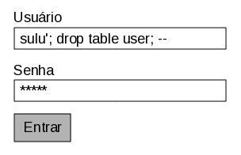

SQL Injection - Vacine suas aplicações!(){
Dicas
Por: Eder Paraiso C. Flor e Pedro Henrique Araújo
Segurança. Um assunto que desperta curiosidade e faz brilhar os olhos de muita gente. Hackers, invasão de sistemas, cenas que mais parecem parte do roteiro de filmes de ficção. Mas nem tudo é fantasia. Pergunte para os que desenvolvem sistemas web: como anda a segurança de suas aplicações? Já pararam para pensar nisso?
Muitos não percebem esses detalhes ou não se preocupam com as falhas de segurança que uma aplicação pode ter, seja por falta de conhecimento ou por questão de custos e prazos no projeto. No entanto, a segurança das informações é um assunto que exige atenção especial, principalmente em se tratando de informações armazenadas em bancos de dados acessados via Web.
Existem várias formas de se explorar vulnerabilidades em sistemas. Nesta matéria ficaremos restritos a uma vulnerabilidade comum em aplicações baseadas em bancos de dados SQL: SQL Injection (Injeção SQL). SQL Injection é o termo utilizado para designar a inserção de código SQL malicioso em uma operação select, no contexto de uma aplicação.
Um usuário mal intencionado pode se valer da sintaxe da SQL para inserir instruções maliciosas na consulta que está por trás de uma janela da uma aplicação.  Por exemplo, considere a tela de login de uma aplicação. Considere também que o login do usuário é "sulu" e que sua senha é "spock". Ao preencher esses dados e pressionar o botão "ENTRAR", a aplicação provavelmente irá realizar a seguinte consulta
SELECT id FROM user
WHERE nome = 'sulu'
AND senha = 'spock';
Ok, mas se o sr. Sulu estiver mal intensionado ele poderá o se idenficar para aplicação tal qual a figura aí ao lado. O resultado: a tabela "user" será removida do banco de dados. Vejamos porque. Após o sr. Sulu ter pressionado o botão "ENTRAR", a aplicação irá gerar a seguinte sequência de SQL
SELECT id FROM user
WHERE nome = 'sulu';
DROP TABLE usuarios ;
--' AND senha = 'meusegredo';
O caracter ";" é um separador de instruções, então duas instruções serão executadas: select e drop table. A string "--" que, na sintaxe SQL representa o início de comentários de linha, faz com que o restante da consulta original seja desconsiderada. Pronto, está concluída a injeção, que neste caso, "inoculou um veneno" doloroso.
}